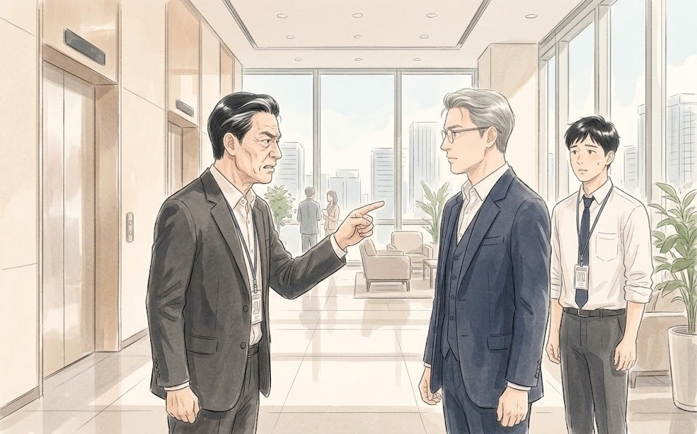
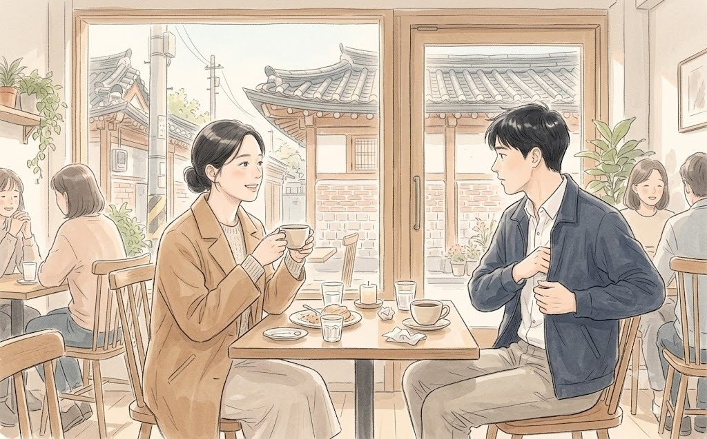

"다들 휴대폰 꺼내세요."
열여섯 명이 동시에 주머니를 뒤졌다. 누군가는 재킷 안쪽에서, 누군가는 서류 가방에서, 엄기태 상무는 한참을 찾다가 비서실에 두고 온 걸 깨달았다. 이우진이 조용히 자기 휴대폰을 건넸다.
문혜경 사장은 여전히 서 있었다.
"인터넷 창 열고, 두 군데 들어가세요. 하나는 우리 브랜드몰. 하나는..."
"...소다랩."
그녀가 말한 이름은 소다랩이었다. 창업 5년 만에 해외 매출이 청연의 수결 브랜드를 따라잡았다는 바로 그 회사. 회의실의 몇 사람이 아주 작게 숨을 들이켰다.
"둘 다 같은 걸 사 보세요. 수분 크림 하나. 결제 버튼 누르기 직전까지만. 몇 번 눌렀는지 세면서."
회의실에 손가락 두드리는 소리만 남았다.
이우진은 문 옆에 서서 한지석의 화면을 곁눈질로 봤다. 소다랩 몰. 첫 화면에 크림이 떴다. 누른다, 하나. '바로 구매' 버튼, 둘. 간편결제 화면, 셋. 끝이었다. 회원 가입도, 로그인도 없었다.
"셋이요."
맞은편에서 재무팀장 오정택 상무가 먼저 말했다. 숫자 앞에서는 늘 제일 빨랐다. 이어서 여기저기서 '셋', '셋', '저도 셋'이 나왔다.
문혜경이 고개를 끄덕였다.
"이제 우리 몰."
이번에는 아무도 먼저 숫자를 말하지 않았다.
청연 브랜드몰. 첫 화면에는 크림 대신 '봄맞이 회원 감사 이벤트' 팝업이 떴다. 닫는다, 하나. 크림을 찾아 '스킨케어' 메뉴로, 둘. '수결' 브랜드관으로, 셋. 상품을 누르고, 넷. '구매하기'를 누르자 로그인 창이 떴다. 다섯.
회원이 아니니 가입을 눌렀다. 여섯. 약관이 일곱 개였다. 전체 동의 버튼은 없었다. 한지석은 일곱 번을 눌렀다. 그건 세지 않기로 했다. 본인 인증, 일곱.
"어?"
황인석 대표였다. 그는 휴대폰을 들여다보며 미간을 찌푸렸다.
"인증 문자가 안 오는데요."
아무도 대답하지 않았다. 대표이사가 자기 회사 쇼핑몰에서 본인 인증에 막혀 있었다. 엄기태 상무는 이우진의 휴대폰을 들고 조금 더 앞선 곳에서 막혀 있었다. 그는 약관을 하나씩 열어 읽고 있었다.
한지석의 화면에는 인증 문자가 왔다. 인증을 마치자 화면이 처음으로 돌아갔다. 장바구니가 비어 있었다.
"..."
한지석은 다시 크림을 찾았다. 장바구니, 여덟. 결제 화면으로 넘어가자 '쿠폰을 적용하시겠습니까?'라는 창이 떴다. 적용할 쿠폰은 없었다. '아니오', 아홉.
그제야 결제 버튼이 보였다.
"아홉입니다."
한지석이 말했다. 목소리가 생각보다 크게 울렸다.
"저도 아홉이요."
"저는... 열하나요. 이벤트 팝업이 두 번 떠서."
"저는 아직 인증 중입니다."
마지막은 황인석 대표였다. 회의실의 누군가가 웃음을 참느라 기침을 했다.
문혜경은 웃지 않았다. 그녀는 처음으로 의자를 빼서 앉았다. 상온 생수에는 손대지 않았다.
"셋과 아홉. 고객은 여섯 번을 더 눌러야 우리 크림을 삽니다. 그 여섯 번 사이에 몇 명이 나갈까요?"
아무도 대답하지 않았다.
"엄 상무님."
엄기태가 이우진의 휴대폰을 든 채 고개를 들었다.
"상무님 따님이 몇 살이죠?"
"스물아홉입니다."
"따님은 화장품을 어디서 삽니까?"
"그건... 잘 모르겠습니다."
"모른다는 대답 말고요."
문 옆에 선 이우진은 숨을 멈췄다. 새벽 5시 반, 양은주 비서의 목소리가 떠올랐다. 모른다고 하면 회의가 거기서 끝나요.
엄기태는 잠시 입을 다물었다가 말했다.
"인터넷에서... 사는 것 같습니다."
"그 인터넷이 우리 몰입니까?"
회의실이 조용해졌다. 연휘는 그룹의 자존심이었다. 백화점 1층, 면세점 가장 좋은 자리. 그 브랜드의 사업부장이 자기 딸이 어디서 화장품을 사는지 몰랐다. 그리고 그 사실을 열여섯 명 앞에서 들켰다.
"연휘 고객은 백화점에서 삽니다. 온라인에서 연휘를 할인하면 브랜드가..."
"상무님. 지금 연휘 고객 평균 나이가 몇입니까?"
"..."
"그 고객의 딸들은 백화점에 안 갑니다. 그 딸들이 엄마 화장품도 사 줍니다. 휴대폰으로. 세 번 눌러서."
엄기태는 더 말하지 않았다.
문혜경이 고개를 돌렸다. 시선이 테이블을 따라 천천히 움직이다 한 사람에게서 멈췄다.
"권 상무."
"네."
"고객이 우리 몰에서 크림 하나를 사려면 왜 아홉 번을 눌러야 합니까?"
권재혁은 대답하지 않았다.
1초.
2초.
3초.
한지석이 입을 열려고 했다. 브랜드몰 개편이 지연된 이유, IT 예산이 두 번 깎인 경위, 사업부마다 요구하는 팝업이 다르다는 사정. 그는 그 모든 걸 숫자로 말할 수 있었다.
권재혁의 왼손이 테이블 아래에서 아주 조금 움직였다. 한지석만 볼 수 있는 각도였다. 말하지 마.
"다음 주 토요일까지, 세 번으로 줄이는 방법을 가져오겠습니다."
문혜경의 눈썹이 아주 조금 올라갔다.
"세 번이요?"
"네."
"IT는 뭐라고 합니까?"
"아직 묻지 않았습니다."
"묻지도 않고 약속합니까?"
"물으면 6개월이라고 할 테니까요."
이번에는 회의실 몇 군데서 진짜 웃음이 터졌다. IT플랫폼그룹 사람들만 웃지 않았다.
문혜경은 권재혁을 오래 보았다. 그리고 일어섰다.
"좋아요. 다음 주 토요일 7시."
7시 52분. 그녀는 문으로 걸어가다가 테이블 끝에서 멈췄다. 덮여 있던 출력본 하나를 집어 두 번째 장을 펼쳤다. 청연과 소다랩·민트앤·데이브리즈의 성장률 막대그래프.
그녀는 이우진이 놓아 둔 빨간 볼펜을 집었다. 가장 짧은 막대에 동그라미를 쳤다. 그 옆에 한 글자를 썼다.
'왜?'
볼펜을 내려놓고, 그녀는 나갔다.
회의실에는 손대지 않은 상온 생수 열여섯 병이 남았다.
"권 상무."
황인석 대표가 권재혁의 어깨를 두드렸다. 그는 결국 본인 인증을 끝내지 못했다.
"2주라고 쓴 건 잘했어요. 근데 세 번은 왜 약속했어요?"
"아홉 번보다는 쉬우니까요."
황인석은 웃었다. 그 웃음이 칭찬인지 경고인지, 이우진은 알 수 없었다.
엘리베이터 앞에서 엄기태 상무가 권재혁을 불러 세웠다. 이우진은 돌려받은 휴대폰을 쥔 채 두 걸음 뒤에 서 있었다.
"권 상무."
"네, 상무님."
"연휘를 세 번 눌러서 사는 물건으로 만들 생각이면, 각오하는 게 좋을 거예요."
"연휘를 싸게 팔자는 게 아닙니다. 사기 쉽게 만들자는 겁니다."
"그 둘이 다르다고 생각해요? 온라인에서는 쉬운 게 싼 거예요."
엘리베이터 문이 열렸다. 엄기태는 먼저 타고, 닫힘 버튼을 눌렀다. 문이 닫히기 직전에 그가 한마디를 더 했다.

"외부에서 온 사람들은 꼭 회사를 3년 만에 바꾸려고 하더라고."
문이 닫혔다. 권재혁은 다음 엘리베이터를 기다리지 않고 계단 쪽으로 걸었다. 이우진은 그 뒷모습을 보며 생각했다. 오늘 아침 회의실에는 적이 하나 있는 줄 알았다. 소다랩. 그런데 적은 바깥에만 있는 게 아니었다.
8시 10분. 29층 작은 회의실에 넷이 다시 모였다.
한지석이 먼저 입을 열었다.
"상무님, 아까 왜 말리셨어요? 이유는 다 설명할 수 있었습니다. IT 예산 삭감, 사업부 팝업 요청, 개편 연기 경위까지."
권재혁은 창밖을 보며 말했다.
"사장님은 이유를 물은 게 아니에요."
"그럼요?"
"우리가 이유를 대는 사람들인지, 방법을 가져오는 사람들인지 본 거예요. 이유는 아무리 정확해도 그 방에서는 변명이 돼요."
한지석은 대답하지 않았다. 납득한 얼굴은 아니었다. 하지만 반박할 말도 찾지 못한 얼굴이었다.
권재혁이 손목시계를 봤다.
"한 차장, 아드님 수영 몇 시라고 했죠?"
"...아홉 시요."
"지금 가면 되겠네. 가요. 월요일에 봅시다."
한지석은 잠시 멍하니 서 있다가 가방을 집어 들었다. 문을 나서며 그는 고개를 한 번 숙였다. 권재혁은 이미 노트북을 열고 있었다. 이우진은 그 장면을 오래 기억하게 된다. 3초 동안 침묵하던 사람이, 남의 아이 수영 시간은 기억하고 있었다는 것을.
오전 9시. 회의록을 정리하던 이우진의 손가락이 한 줄에서 멈췄다.
'미결 사항: 아홉 단계 발생 원인 — 답변 미흡'
이 줄을 남겨야 할까. 사장의 '왜'에 아무도 대답하지 않았다는 사실을. 그는 커서를 깜빡이게 둔 채 한참을 앉아 있었다.
"우진아, 이제 가. 너 오늘 약속 있다며."
백승원이었다.
"회의록은요?"
"월요일에 해. 오늘은 너 사람 노릇 하는 날이야."
"부장님은요?"
"나는 상무님이랑 할 얘기가 좀 있어."
백승원은 웃었지만, 눈은 웃지 않았다. 이우진은 그 얼굴을 알았다. 회식 자리에서 누군가의 실수를 자기 이름으로 덮기 직전에 짓는 표정이었다. 오늘 회의에서 덮어야 할 실수가 무엇이었는지, 이우진은 아직 몰랐다.
그는 노트북을 덮고 서둘러 엘리베이터로 향했다. 집에 들러 씻고, 옷을 갈아입고, 브런치 카페 「오월의 식탁」까지 40분. 계산하면 빠듯했다. 지하철역까지 뛰면서 그는 채원에게 메시지를 보냈다.
이번에는 바로 답이 왔다.
그는 달리면서 하늘을 찍어 보냈다. 토요일 아침의 하늘은 지나치게 맑았다.
오전 10시 55분. 서촌의 브런치 카페 「오월의 식탁」.
이우진은 7년 만에 처음으로 약속 시간보다 먼저 도착했다. 5분 뒤 들어온 윤채원이 그를 보고 걸음을 멈췄다.

"뭐야. 오늘은 안 늦었네?"
"7주년이잖아."
채원이 웃었다. 이우진도 웃었다. 그리고 습관처럼 재킷 안주머니에 손을 넣었다.
비어 있었다.
반지는 29층, 그의 책상 맨 아래 서랍 속에 있었다.
"왜? 뭐 잃어버렸어?"
"아니. 그냥."
휴대폰이 진동했다. 새 단체 대화방이었다. 만든 사람은 백승원. 참여자는 넷.
잠시 뒤 대화방 이름이 바뀌었다.
'토요일 아침 7시 (1/52)'
이우진은 휴대폰을 엎어 놓았다. 맞은편에서 채원이 메뉴판을 내밀었다.
"오늘은 하루 종일 나만 본다며."
"응. 하루 종일."
서랍 속의 반지는, 그 뒤로도 한참 동안 그 자리에 있었다.
(EP3 끝)